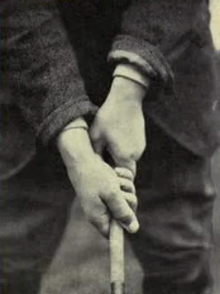
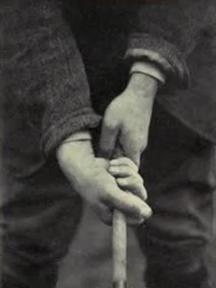

사진으로 자세를 맞추고, 오늘 할 1·2·3만 따라 하세요
증상을 고르면 실제 스윙 사진과 함께 원인 판별 → 1단계 → 2단계 → 3단계(2주) → 악화 신호 → 레슨 의뢰 기준 순서로 보여 드립니다. 오른손잡이 기준입니다.
1내 증상 고르기
A/B같은 그립, 좋은 예 · 나쁜 예


출처: 1910년대 골프 교본의 "GRIPS RIGHT AND WRONG" 사진(퍼블릭 도메인).
2자세별 사진으로 각도 맞추기
사진은 실제 라운드 장면입니다. 정확한 각도는 사람마다 다르니, 숫자는 시작점으로만 쓰세요.
연습 참고용입니다. 진단·처방이 아니며, 손목·팔꿈치·허리에 통증이 있으면 연습을 멈추고 전문가와 상담하십시오.
사진 출처